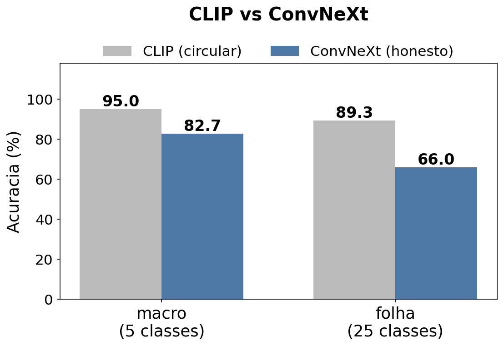

Sem rótulos prontos para uma coleção pessoal de imagens, o Projeto 1 clusterizou. Aqui eu uso esses clusters como classes e treino um classificador para atribuí-las — fechando o ciclo descoberta → classificação.
imagens rotuladas pelo clustering
2 níveis: macro-grupos e subclasses-folha
classificador sobre features pré-extraídas
Classificar sobre os mesmos embeddings CLIP que geraram os clusters infla a acurácia — os clusters são células de Voronoi (cada ponto fica com o centro mais próximo) nesse espaço.
Classificar sobre features ConvNeXt (modelo independente). Se a taxonomia for "real", outro espaço deve recuperá-la. Rodo os dois e comparo.

| Features / nível | Acc | F1 |
|---|---|---|
| CLIP / macro | 0.950 | 0.949 |
| CLIP / folha | 0.893 | 0.883 |
| ConvNeXt / macro | 0.827 | 0.816 |
| ConvNeXt / folha | 0.660 | 0.625 |
Tabela: seed=42 (ilustrativa). Multi-seed (5 seeds) confirma o mesmo padrão — macro 95.4%→83.3%, folha 89.6%→66.1% (CLIP→ConvNeXt). Gap ≫ std (16–47×) → circularidade é robusta, não ruído.